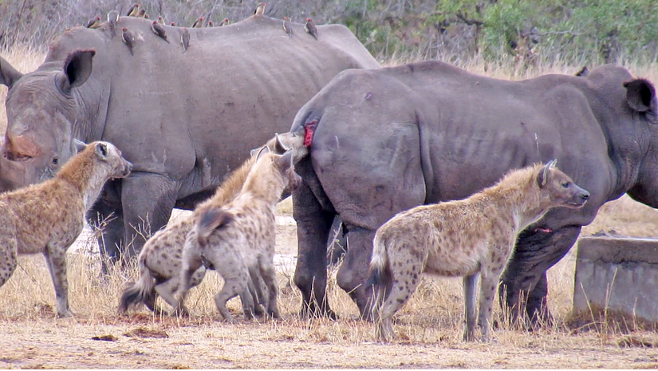

Đàn linh cẩu hợp sức quây con mồi khổng lồ tê giác
Kết cục nào cho con tê giác tội nghiệp bị loài đi săn cơ hội - linh cẩu hợp sức tấn công.
Video: Bầy linh cẩu hợp sức tấn công tê giác bị thương
Linh cẩu luôn được biết đến là loài động vật cơ hội, luôn rình mò, tranh cướp thức ăn của các động vật khác thay vì tự mình đi săn mồi.

Một đoạn video đáng kinh ngạc ghi lại khoảnh khắc bầy linh cẩu hợp sức tấn công con tê giác bị thương được Danie Bester (31 tuổi) quay. Dù hiếm khi nhắm vào mồi lớn cỡ tê giác, linh cẩu là loài đi săn cơ hội không bỏ lỡ bất kỳ bữa ăn sẵn có nào.
Chính vì vậy, tại vườn quốc gia Kruger, Danie bắt gặp 3 con tê giác và đàn linh cẩu đang “hội ngộ” tại một hồ nước. Danie nhận thấy linh cẩu cắn vào lưng của tê giác, tại sao lại như vậy?
Hóa ra, một con tê giác bị thương nhẹ. Có lẽ vì điểm yếu này, kẻ săn mồi đã bắt lấy cơ hội kiếm một “bữa ăn thịnh soạn”.

Một trong những con linh cẩu bắt đầu lao vào cắn xé phần đuôi tê giác không ngừng. Bầy linh cẩu chia nhau quấy rối mục tiêu. Lúc đầu, đồng loại của con tê giác bị thương xúm lại để bảo vệ nó, nhưng chúng nhanh chóng tập trung gặm cỏ, bỏ mặc nạn nhân tự vệ trước linh cẩu.
Sau một hồi giằng co, linh cẩu đuổi con mồi tới lòng sông khô cạn. Sau đó, những kẻ tấn công đã rượt đuổi tê giác khuất khỏi tầm mắt của Danie.
Danie không chắc cuộc săn mồi này kết thúc như thế nào nhưng anh hy vong tê giác có thể thoát khỏi vòng vây của đàn linh cẩu.
-
Nguyên nhân khiến hơn 2.000 con chim chết “bất đắc kỳ tử” bên hồ
Tại Ấn Độ, các nhà chức trách bang Rajasthan đang đau đầu trước tình trạng hơn 2.000 con chim chết la liệt ở hồ nội địa lớn nhất Ấn Độ. -
Lợn rừng “thám tử” đánh hơi phát hiện cocaine giấu trong rừng
Đàn lợn rừng góp công lớn giúp cảnh sát vùng Tuscany phát hiện lượng cocaine của băng nhóm buôn bán ma túy giấu trong rừng.